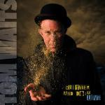
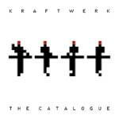
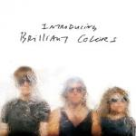

Music Reviews
-

Tom Waits Glitter and Doom Live
Tom Waits probably didn't take his 2008 tour through a city near you, but he was nice enough to let us all in on what exactly went on behind the closed doors of his shows. The results, not surprisingly, are entrancing.
Andy Pareti thinks the piano has been drinking again... -
Flight of the Conchords I Told You I Was Freaky
New Zealand's fourth-most-popular guitar-based digi-bongo-acapella-rap-funk-comedy folk duo releases their second studio album.
Michael Skinnider reviews... -

Jemina Pearl Break It Up
Be Your Own Pet front woman Jemina Pearl returns to fill a void that no one wanted filled: indie teen pop idol.
Andrew Baer would love this if he were his sister five years ago... -

Simian Mobile Disco Temporary Pleasure
Sadly, they're not monkeys and regrettably, they're not particularly portable. But do they know how to D.I.S.C.O?
Joe Rivers puts on his glad-rags, and heads out to the city... -
John Mayer Battle Studies
Battle Studies sees John Mayer clutch stubbornly to his adult contemporary niche despite the raspy voice of blues that continues to call out to him.
Andy Pareti is getting drowsy... -

50 Cent Before I Self Destruct
Considering how barren 50's music has been since Get Rich, the relativly successful Before I Self Destruct comes out of nowhere.
Nate Adams gets gritty with Fiddy, is probably a wangster... -

Kraftwerk The Catalogue: Four Decades of Masterworks
Time to free up your hard drive: Thirty-five years after Autobahn, and Kraftwerk’s chasing the future.
Sean Caldwell tunes into the melody... -
Molina and Johnson Molina and Johnson
Jason Molina and Will Johnson collaborate for the first time. An exciting prospect, but a somewhat underwhelming result.
Paul Fowler reviews Molina and Johnson -
Low End String Quartet Blunt Objects
Gustav Mahler said, "The symphony must be like the world: it must be all-embracing." I wonder if the world will embrace this experiment.Ryan Faughnder puts his classical hat on... -

Brilliant Colors ...Introducing
Brilliant Colors tries so hard, but comes up short on their new LP.
Preston Bernstein inadvertantly pisses off strong women once again...